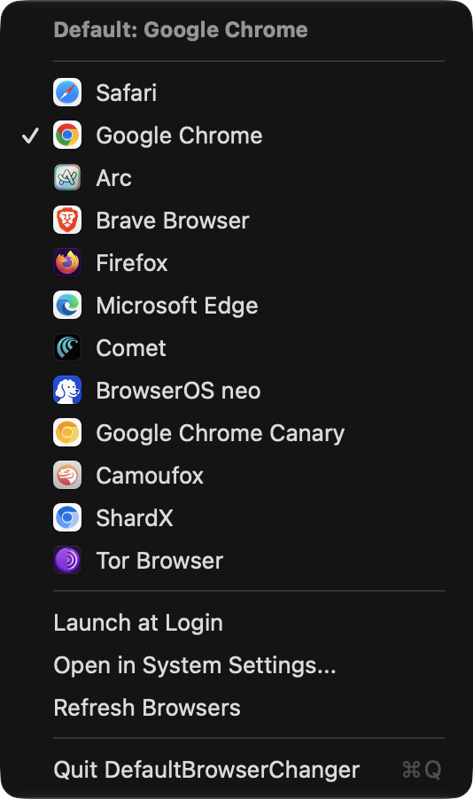
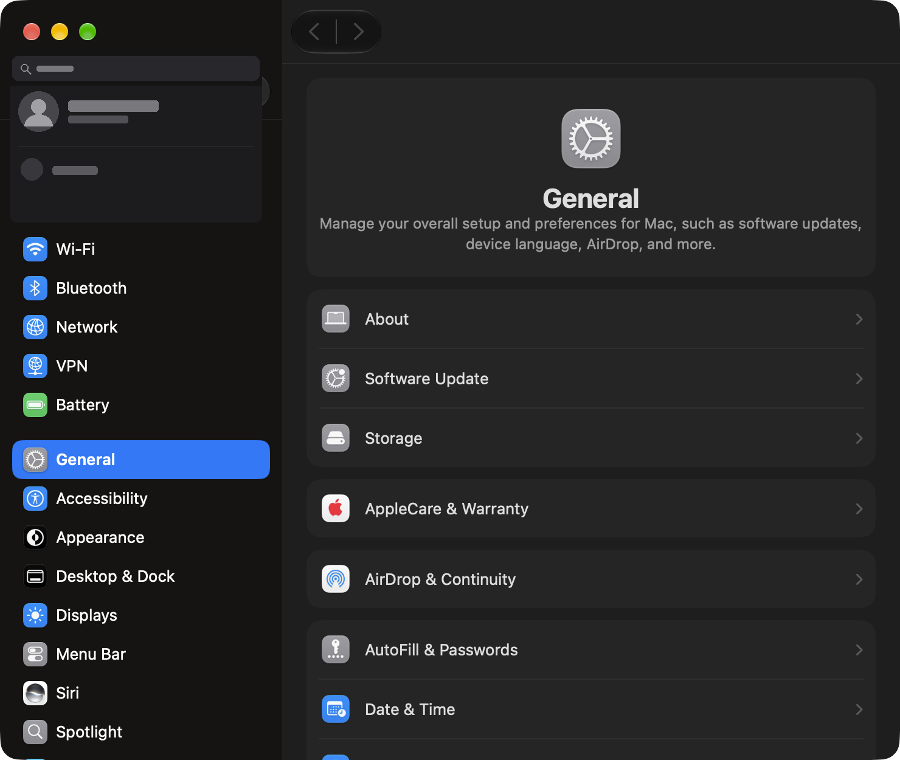
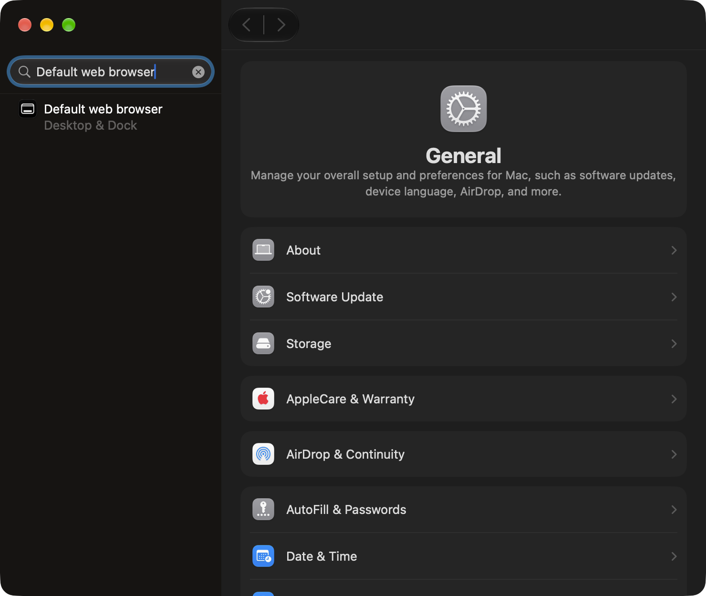
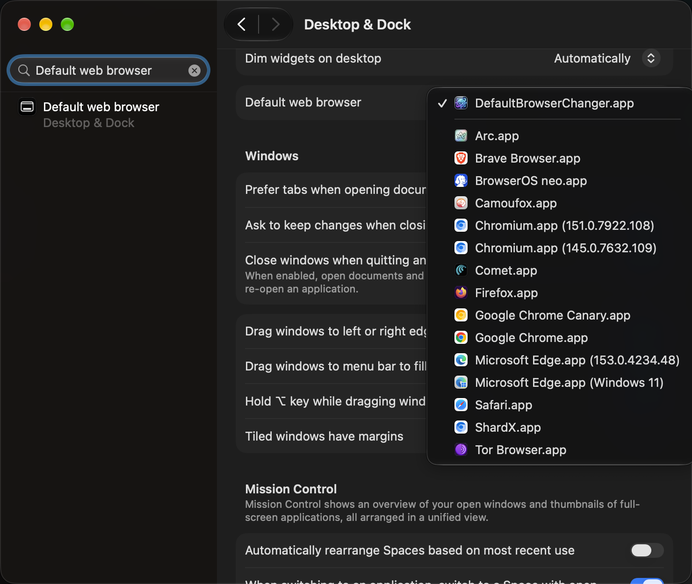

A native macOS menu bar utility with an instant 0.001s Link Interceptor. Switch default browsers with a single click or a universal shortcut.

Runs quietly as an LSUIElement application. No Dock clutter, zero memory overhead, and instant switching between all your favorite browsers.
Everything you need to juggle multiple browsers without touching macOS settings every time.
Acts as an instant native URL proxy. Links clicked in Slack, Mail, WhatsApp, or Discord immediately open in your currently chosen browser.
Pop the switcher menu anywhere across multiple displays and macOS spaces without reaching for your mouse.
Automatically scans and displays Safari, Arc, Chrome, Brave, Firefox, Edge, Orion, Zen, Vivaldi, and any custom web handler.
Lives purely in your top menu bar with zero Dock icon clutter. Consumes under 12MB RAM with 0% idle CPU footprint.
No Accessibility permissions, no screen recording, and no root/sudo privileges needed. Completely sandboxed Cocoa.
Zero telemetry, zero tracking, zero external network requests. Inspect every single line of native Swift on GitHub.
Make DefaultBrowserChanger your default browser once. It dynamically handles the rest.
Open System Settings and navigate to Desktop & Dock in the sidebar.

Scroll down to the Default web browser dropdown menu.

Select DefaultBrowserChanger as your system default browser.

Because DefaultBrowserChanger is free and open-source without an expensive Apple Developer ID notary subscription, macOS Gatekeeper may show a warning on first launch. Simply run this one-line command in Terminal to clear the quarantine flag:
Got questions about how DefaultBrowserChanger works under the hood? Here are the answers.
xattr -cr /Applications/DefaultBrowserChanger.app strips the quarantine attribute. The entire Swift source code is public on GitHub for you to audit.
NSWorkspace.shared.open calls with direct bundle identifiers, taking less than 1 millisecond. You won't notice any latency compared to opening directly.
/Applications to Trash. It leaves zero daemons, background agents, or configuration files behind.